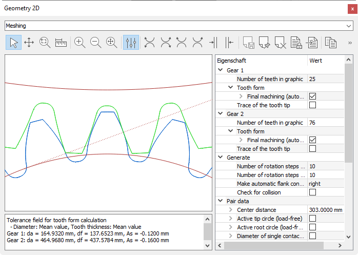

|
|
|


图形窗口
在 KISSsoft 中，您可以同时打开任意数量的图形窗口，并以与其他停靠窗口相同的方式排列它们（见"停靠窗口"章）。这意味着您可以一目了然地看到计算所需的所有图形和图表。为了使图形处理更高效，您可以使用工具栏（见"工具栏和上下文菜单"章）、注释字段、上下文菜单（见"上下文菜单"章）和属性（见"属性"章）。

图 4.4：图形窗口的组成部分
Graphics window
In KISSsoft, you can open as many graphics windows as you need at the same time and arrange them in the same way as the other docking windows (see chapter Docking window). This means you can see all the graphics and diagrams you require for your calculations at a glance. To make working with graphics more effective, you can use the tool bar (see chapter Tool bar and context menu), the Comment field, the context menu (see chapter Context menu) and the Properties (see chapter Properties).
Figure 4.4: Components of the graphics window